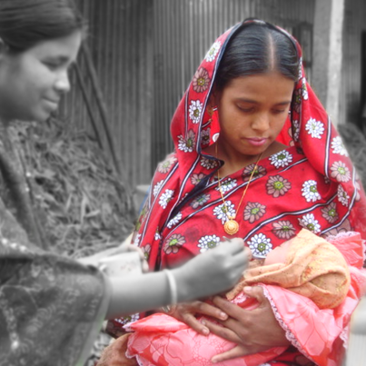

Balali is the small village of Teyosree Union. Puspa Akter, an ordinary woman lives in this village. She was married in 2006 with Abdul Insan of the same village. After marriage there was no problem in the family.
However, after one year of her marriage, Puspa became pregnant. When she informed her family and husband about her pregnancy, all of them took it normally. Her husband did not take any special care for her; even Puspa did not know what special care she should take with. During her pregnancy, she did not take any check up and TT vaccination. Even more, she had to work all the day what she usually did.
Sometimes she did heavy work what was very harmful for her. Just 2-3 days before her date of delivery, Puspa suddenly fall down because of her weakness. Three days later, Puspa delivered a still-birth. This incident not only hurt Puspa but all of the family members became shocked.
After 04 years of her first pregnancy, Puspa again conceded pregnancy. Oli Akter, a community health promoter (CHP), during field visit, came in contact with Puspa and knew about her pregnancy. She also knew about the past incident. CHP Oli then worked out the Expected Date of Delivery and written on her Health Card. During her counseling visit, Oli discussed about the importance of TT vaccine for mother as well as newborn babies. Pupsa took TT vaccine according to CHP's advice. CHP Oli also became able to make Puspa's husband understand so that Puspa take enough rest and must feed enough vegetable for the betterment of both mother and baby. Puspa's husband was motivated and took due care.
Puspa took all 05 TT vaccines in time and three ANC and Iron tablet. Puspa and other family members were also taught about the 05 danger sign and were advised to preserve some money to meet the crisis if any. Puspa and her family followed all the instructions that CHP gave. On the last counseling visit before delivery, CHP suggested to contact a trained birth attendant for delivery as they decided it took place at home.
On the final day of delivery, when pain started, Puspa's husband called Oli, CHP for help. After 3-4 hours later Puspa gave a girl child of a healthy weight as 2.60 grams. During delivery no problem occurred and now both mother and baby are well. The couple is very happy to have healthy baby with no complication on mother as well. Happy couple says, "Proper knowledge and practice procreates healthy babies."
Copyright © 2012-2014 POPI(People's Oriented Program Implementation). All rights reserved.
Terms &Condition’s
¦
Privacy Policy
¦
Help
¦
Site Map
Designed and developed by raisul.net